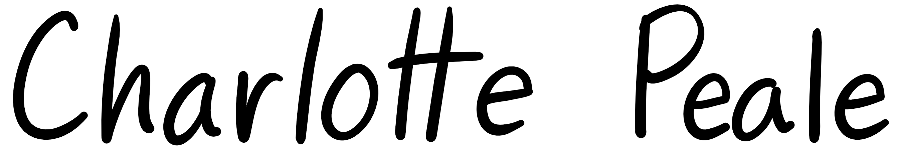

Hi! I'm Charlotte. I'm a fourth year PhD student in Computer Science Theory at Stanford University, advised by Omer Reingold. I am honored to have my research supported by the 2024 Apple Scholars in AIML Fellowship, and I spent the summer of 2024 interning at Apple under the mentorship of Parikshit Gopalan. You can contact me at me at cpeale[at]stanford[dot]edu.
Papers [ google scholar ]
Provable Uncertainty Decomposition via Higher-Order Calibration [ arxiv ]
with Gustaf Ahdritz, Aravind Gollakota, Parikshit Gopalan, Udi Wieder, ICLR 2025⭐ spotlight
Multigroup Robustness [ arxiv ]
with Lunjia Hu, Judy Hanwen Shen, ICML 2024
Taking a Moment for Distributional Robustness [ arxiv ]
with Jabari Hastings, Christopher Jung, Vasilis Syrgkanis
Bidding Strategies for Proportional Representation in Advertisement Campaigns [ arxiv ]
with Inbal Livni Navon, Omer Reingold, Judy Hanwen Shen, FORC 2023
Comparative Learning: A Sample Complexity Theory for Two Hypothesis Classes [ arxiv ][ video ]
with Lunjia Hu, ITCS 2023 ⭐ Best Student Paper Award
Leximax Approximations and Representative Cohort Selection [ arxiv ]
with Monika Henzinger, Omer Reingold, Judy Hanwen Shen, FORC 2022
Metric Entropy Duality and the Sample Complexity of Outcome Indistinguishability [ arxiv ]
with Lunjia Hu, Omer Reingold, ALT 2022 ⭐ E.M. Gold Best Student Paper Award
Secure Complaint-Enabled Source-Tracking for Encrypted Messaging [ paper ]
with Saba Eskandarian, Dan Boneh, CCS 2021 ⭐ CURIS Outstanding Poster Award
Bounded-Leakage Differential Privacy [ paper ]
with Katrina Ligett, Omer Reingold, FORC 2020